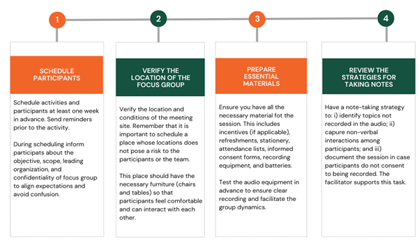
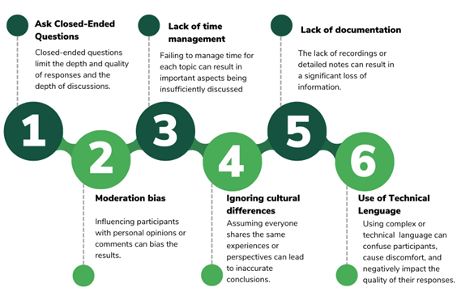

Conducting Focus Groups
Focus groups are a widely used method in qualitative research. In this article, the IPA Colombia team provides guidance on how to plan and implement focus groups as part of your IPA projects.
What is a focus group?
Focus groups are one of the most widely used techniques in social research, particularly within qualitative studies. This method involves creating a discussion space where three to eight participants engage in an in-depth conversation about one or more topics.1
In a typical focus group, a moderator leads the discussion, ensuring active interaction among participants. The moderator’s role is to ask questions that stimulate discussion, guide the conversation to gather valuable insights, and build trust with the participants. This trust is crucial to making participants feel comfortable expressing themselves freely, ensuring the discussion remains productive and focused on relevant topics.

Focus groups are artificially configured environments, characterized by collecting information related to the interaction among participants to explore their perceptions, opinions, and attitudes toward specific topics.2 This technique allows one to collect data on how participants communicate, share their opinions and experiences, and react to the contributions of others.
The dynamics of focus groups allows to identify what information is censored or encouraged among participants.3 In this context, group conversation does not necessarily imply consensus, because during the conversation participants may misinterpret each other’s accounts, question themselves and attempt to persuade each other.4 Disagreement is also a key component of this collection technique, as it allows exploring the diversity of opinions and the reasons behind participants’ beliefs and attitudes. Overall, focus groups make it possible to identify both shared perceptions and divergences among participants on a specific topic.

In a focus group with Venezuelan migrants in Colombia, several common perceptions about the healthcare system emerged. While some participants acknowledged the accessibility of essential medical services as an advantage of the Colombian system, others expressed concerns about the quality of care, long wait times, and challenges in accessing specialized services, particularly due to their migratory status.
Planning a focus group
Proper preparation is essential for the success of focus groups, ensuring that the research activity meets its field data collection objectives. This section provides detailed guidance on the planning steps that should be undertaken before conducting a focus group.
1. Structure your team
Ideally, focus group teams should consist of at least two (2) roles: a moderator and a facilitator. The moderator’s primary responsibility is to lead the discussion during the focus group, ensuring that the conversation remains on track and that all participants are engaged. The facilitator handles logistical activities such as setting up recording equipment, providing refreshments and incentives, setting up the space, as well as, taking notes. It is crucial to clearly define and assign these roles in advance to ensure a smooth execution of the focus group.
If budget constraints prevent hiring a facilitator, it’s important to recognize that this could negatively impact the quality of the activity and the data collected. Overburdening the moderator with both discussion and logistical duties may compromise their ability to maintain participant focus and engagement. Researchers should be aware of these potential drawbacks when planning qualitative data collection without a dedicated facilitator.
2. Understanding the Desirable Skills of the Field Team
The quality of data produced during qualitative research activities is closely related to the skills of the moderator and facilitator. These competencies, outlined in Table 1, enable teams to recognize and adequately represent the diversity within qualitative data.
While these skills are typically developed through years of study and practice, field teams often consist of individuals from multidisciplinary backgrounds with varying levels of experience. Regardless of experience level, it is important to review and discuss these skills with your team to identify possible gaps and opportunities for improvement.
Currently, there are no standardized metrics to measure the prevalence of these skills among qualitative fieldwork moderators. Therefore, the skills in Table 1 should be viewed as a resource for reference and reflection for teams.
Ensuring that everyone on the team understands how these competencies contribute to effectively engaging with the population is essential for collecting high-quality information.
Table 1: Desirable skills in the field team
| Ability | Description | Why is this skill important? |
|---|---|---|
| Cognitive empathy | The field team’s ability to understand and communicate participants’ situations from their perspectives, understanding how they see the world and their roles within it. | Allows researchers to connect more deeply with participant’s realities and experiences. Helps to create a relationship of trust and respect with the participants. Seeks to avoid generalizations and stereotypes that may arise from preconceptions or external influences such as previous studies. Enhances understanding of participants’ situations without resorting to pity. |
| Follow-up | The field team’s ability to recognize when additional information is needed to answer the questions initially posed and those that arise during the research process. This ability implies curiosity and a willingness to explore new issues or doubts that emerge as data collection progresses. | Increases the quality and robustness of data by allowing a more detailed exploration of the studied phenomenon. Contributes to obtaining deeper responses from participants. Enables exploration of emerging themes during data collection. Helps in detecting and validating patterns observed in the field. |
| Self-awareness and reflexivity | The field team’s ability to continuously reflect on how their presence, background, and assumptions influence data collection, interpretation, and analysis. This ongoing self-reflection ensures that the qualitative field team is mindful of its impact on the research process and the participants. | Helps maintain ethics in the researcher-participant relationship. Facilitates understanding of personal limitations in connecting with participants. Aids in developing strategies to overcome communication barriers and create an environment where participants feel comfortable sharing sensitive information. |
| Heterogeneity | The field team’s ability to represent and reflect the diversity within the group being studied. This skill involves recognizing and documenting the differences and variations among individuals or subgroups during qualitative research, typically applied during the data analysis phase. | Contributes to challenging generalized and simplistic patterns. Ensures that data reflect both common and atypical experiences. Demonstrates the field team’s ability to identify, recognize, and document heterogeneity in the population studied. |
| Palpability | The field team’s ability to provide detailed descriptions in their field notes or diaries, making the data tangible and clear. This involves avoiding abstract descriptions and, instead, offering vivid accounts that allow the research team to visualize and understand participants’ experiences and contexts. | The palpable field notes and diaries are accompanied by textual quotations, images, or other audiovisual resources that show events, situations, and actors that support the research findings. Reliable findings are supported by specific details that clearly depict the events and situations studied. Helps to avoid abstraction in the data, grounding conclusions in concrete evidence. |
3. Plan logistics activities
Logistical activities are important to ensure the correct implementation of focus groups. Careful logistical planning will ensure that all the necessary elements are in place to carry out the activities, participants have been scheduled in a timely manner, and all the details surrounding the fieldwork are clear.
Based on the experience of conducting qualitative field operations in various contexts, the IPA team has identified several key practices that are essential for the logistical preparation of a focus group:
Figure 1: Logistical activities for focus groups

The sequencing of these activities is suggested and may change according to the context in which the focus groups are conducted. Figure 1 excludes logistical activities that the field and research team had to undertake to ensure the feasibility of conducting research activities, such as guaranteeing a space, contacting leaders, purchasing materials, etc. You should make a comprehensive list of the critical aspects to ensure the success of your qualitative data collection at different levels. As the fieldwork approaches, we suggest you consult the issues in Figure 1.
4. Study the script
The discussion script is a support tool that seeks to guide the conversation during the focus group according to the research objectives. It contains open-ended questions and topics designed to encourage reflection and discussion.
You should study the script several times before the activity so that you will be able to explore new topics without losing sight of the objectives of the session. During this process of studying the script, identify:
- The objective of the research activity.
- The logical order of the focus group guide.
- Possible words or expressions that may confuse the participants so that you have time to change them to more understandable ones.
If you know in detail the topics to be explored, the script will serve as a reminder during the talk, allowing you to have more flexible and deeper conversations, without losing sight of the research objectives.
In addition to understanding the script, the facilitator must also understand the research questions of the project. This will allow them to probe beyond the guide and see, during the execution of the activity, possible questions or dimensions of the problem that were not known when the script was developed.
Conducting a focus group
1. How to start the focus group?
- Introduce yourself and clearly explain the role of each member of the work team, and the overall dynamics of the session.
- Read the informed consent, ensuring all participants clearly understand the purpose of the activity and the potential risks and benefits of their participation. During this process, emphasize the confidentiality and anonymity of the information collected during the focus group. The moderator should explicitly obtain the participants’ authorization to record the session.
- Throughout the activity, create a comfortable and calm environment that allows participants to express their opinions spontaneously and without censorship.
- To maintain a favorable atmosphere, show interest, cordiality, and respect for all interventions, having an attitude of curiosity, even when the topics are extended or the opinions expressed differ from yours.
- Ensure the recording equipment is working properly throughout the activity.
- Take comprehensive notes on the entire activity, particularly focusing on participants’ interactions and nonverbal reactions.
- Ensure that the seating arrangement of the participants is appropriate for effective communication.
- Provide logistical support to the moderator by delivering refreshments and incentives (if applicable) and attending to the specific needs of participants, such as assisting visually impaired individuals or accommodating participants with children.
- Support the moderator in managing the session’s timing.
2. How to be an effective moderator?5
Moderation is a fundamental aspect of focus groups. The moderator is responsible for guiding the discussion, ensuring equal participation from all members, and keeping the conversation focused on relevant topics. An effective moderator facilitates a smooth and natural discussion, creating an environment where participants feel comfortable and safe to express their opinions openly, without fear of criticism or judgment.
This role also involves managing complex and potentially challenging group dynamics, ensuring that all participants have equal opportunities to contribute, and preventing any one participant from dominating the conversation.
Table 2: Basic principles in focus group moderation6
| Activity | Description |
|---|---|
| Show interest in participants (Cognitive empathy) |
As a moderator, it’s important to show respect and genuine interest in each participant’s contributions. Recognize that everyone has valuable knowledge, regardless of their education level, experience or background. 💡Acknowledge contributions with expressions such as “Thank you for sharing that” or “That’s a very interesting point.” 💡 Address participants by their first name or their chosen pseudonym. |
| Avoid assumptions (Follow-up and heterogeneity) |
Do not assume that the concepts or ideas expressed by the participants are obvious. Avoid taking for granted the meaning of any idea, concept, or expression. 💡For example: In a focus group with Venezuelan migrants, the expression “chamo” comes up. If you do not know this word, you should ask the participants directly what they are referring to with that word. |
| Generate empathy with participants (Cognitive empathy) |
Try to generate an empathetic connection with the focus group attendees, as this will help them feel safe and valued in sharing their emotions and experiences. By creating a non-judgmental environment, participants may feel more comfortable speaking honestly and openly. 💡 Repeat or summarize participants’ comments to show that you understand their perspectives. 💡Be patient. Do not rush the answers. Allow participants to take their time to think and respond. |
| Be a moderator, not a participant (Reflexivity) |
The moderator’s role is to guide the conversation, not to be part of it or share personal views. Some moderators assume that sharing personal experiences will encourage a greater exchange of ideas among participants. However, this practice can induce bias and affect the conversation’s overall flow. |
| Be prepared to listen to different opinions and control your reactions (Reflexivity) |
The moderator is not impartial, no matter how hard he/she tries. It is important to identify your own biases and seek to contain personal assessments of the various opinions that may come from the participants. Avoid making value judgments about the testimonies and responses of the attendees. 💡 It’s important to be mindful of your reactions, as even small responses like nodding or giving short positive feedback such as ‘I think so too’ or ‘You are right’ can inadvertently influence the discussion. These reactions can induce social desirability bias, potentially altering the participants’ responses and the overall dynamics of the discussion. |
| Use your talents (Palpability) |
Identify your talents and use those that build trust and encourage conversation among participants. 💡Make a list of your skills and talents. Think about what you do well and how these talents can be useful in the context of a focus group. |
| Ask follow-up questions (Follow-up) |
Asking follow-up questions allows for a deeper exploration of participant’s responses. This is essential to understand not only what people think, but why they think the way they do. |
3. Possible challenges
Table 3: Considerations and challenges in face-to-face focus groups
| Challenges | Description | Possible solutions |
|---|---|---|
| Emotional overflow from participants | Managing emotions can be one of the most complex challenges during a focus group, especially when discussions touch on intense or personal topics. | Allow participants to express their emotions, but guide them constructively. Ask how they feel and why, and look for ways to channel those emotions into the discussion. If a person is emotionally affected by an event, ask them if they wish to continue the activity and remind them that participation is voluntary. If emotions disrupt the session, take a short break and show understanding and support. In accordance with research protocols, provide relevant mental health care resources that may be useful for the participants. If the issues to be addressed during the focus group sessions are sensitive, it is desirable for the field team to have a course or training on psychological first aid. |
| Resistance to recording | Some participants may not agree with the recording of their testimonies. If this happens, take into account the following recommendations. | Emphasize confidentiality, anonymity, and privacy of the data. Remind participants that during the analysis of the information, no personal data of any participant will be added. If you do not obtain authorization to record the session, take notes on topics of conversation, interactions between participants, and other relevant data. |
| Conversation diversion | While deviations from the central theme can sometimes provide valuable insights, it’s necessary to steer the conversation back to the research objectives when it strays too far. | During the participants’ interventions, ask follow-up questions that allow you to close the ideas and/or redirect them to the research objectives. |
| Participants trying to dominate the conversation | Occasionally, some participants may attempt to dominate the discussion, overshadowing more reserved participants. | Set ground rules at the start of the session regarding the length of contributions. Identify strategies for asking participants to close their ideas when they are too long. For example, you can use an eye-catching object like a signaling paddle to get participants to finish their contributions. |
| Participants who are shy or reluctant to participate | Some participants are too shy to participate or are pushed aside by those who seek to dominate the conversation. In these cases, you must control the situation so everyone can join the conversation. | Use “icebreaker” activities at the beginning of the session in which everyone participates. Directly address less active attendees with open-ended questions that encourage them to express their thoughts. |
| Polarization of the conversation | Some topics may have one side polarization on the group discussion, leading to an “excessive consensus” where some participants may hesitate to contradict the dominant view on certain topics. This can limit the diversity of perspectives and affect data quality. | Emphasize that all viewpoints are valuable and that there are no right or wrong answers. Divide the group into smaller subgroups to discuss certain topics, then reconvene to share different perspectives. Limit speaking time to prevent any one participant from monopolizing the discussion. If the conversation becomes hostile, remind the group of the activity’s purpose and, if necessary, pause the session. |
4. Possible errors during moderation
When conducting focus groups, it is important to avoid common mistakes that can compromise the effectiveness of the session and the quality of the collected data. Some of the most critical mistakes are described here:
Figure 2: Common mistakes made when conducting focus groups

After the focus group
The focus group session ends when all research topics have been covered and no new data or relevant information is obtained; the research objectives have been achieved, collecting the quantity and quality of data needed to answer the research questions, or when time and resources have reached their limits. To close the work session, it is recommended to (i) offer space for reflection in which participants can express comments, suggestions, or questions about what happened in the focus group; (ii) thank the participants for their time and willingness to participate, emphasizing that the opinions and information provided are of great importance for the study or research being conducted; and (iii) close the data flow, prioritizing the safe storage of the recording of the research activity.
- Support data flow closure and secure storage of information.
- Provide the notes taken to the moderator.
- Ensure that all equipment used (tape recorders, computers, microphones, etc.) is complete.
1. Document research activities
At the end of the focus group, it is important to document the information obtained in detail. How this documentation is done is a decision linked to the research design and is determined before fieldwork begins. Examples of products you can use for this purpose are:
- Full transcripts of the discussions
- Detailed notes taken during the research activity
- Field notes
- Field diaries
Remember: The lack of initial documentation products risks all information processing components and, thus, the quality of the obtained data.
Information should be recorded promptly, as soon as the focus group concludes, to prevent the loss of crucial details. This immediate action is vital to the research process. In addition, the products derived from the focus group must follow information storage protocols, which may include anonymization and encryption to avoid compromising the confidentiality of participants.
Online focus groups
Virtual focus groups are a viable alternative when in-person sessions are not possible due to factors like distance, time, or budget constraints. While the virtual format shares many characteristics with in-person focus groups, including preparation and moderation activities, it also presents unique challenges that require specific attention.
Table 3: Considerations and challenges in virtual focus groups
| Challenges | Description | Possible solutions |
|---|---|---|
| Low interaction | Virtual settings can reduce interaction due to participants’ inability to read body language and challenges in responding in real time. | Adapt icebreakers to virtual environments. Use activities that promote group dynamics and interaction. Encourage people to keep their cameras turned on. Try to schedule fewer participants, in order to focus attention on the attendees. Manage short conversational scripts as virtual environments may limit direct communication, which could result in skipping sections and/or questions. |
| Connectivity problems | Connectivity issues may cause partial or complete interruptions in participants’ involvement. | Validate participants’ internet connection before scheduling. Provide necessary support, such as data recharges, to ensure participation. Avoid imposing any costs on participants for participating. |
| Lack of knowledge of the video call platform | Some participants may struggle with connecting to and navigating the chosen platform due to unfamiliarity with digital tools. | During the scheduling, offer training on how to use the platform on which the activity will be carried out, for those who need assistance. |
| Lack of privacy | Some participants may take the video call in shared spaces. This situation may place participants in uncomfortable or risky situations, depending on the sensitivity of the topics. | During the scheduling, ask the participants directly: i) where they will take the interview ii) who might listen to you iii) if they feel safe having the interview under these conditions. Based on the above, assess whether it is convenient for certain people to participate in the study under these conditions. If people cannot find a private space and sensitive or confidential topics are handled, we recommend not including that participant in the focus group. And evaluate interviewing this person in a different setting. |
| Distractions and lack of focus | Participants may be distracted by other duties or social media during the session, affecting their concentration and participation. | Suggest that people have their cameras turned on. Emphasize the need for full attention and engagement during the session. |
| Fatigue due to constant use of screens | Prolonged screen time can lead to fatigue, affecting the focus and energy of both moderators and participants. | Schedule breaks during long sessions. Limit the duration of each session to a reasonable time, approximately one (1) hour. Plan multiple sessions if needed. |
This practical guide offers essential tools for conducting qualitative fieldwork through focus groups. However, it’s important to remember that data collection is just the beginning. After gathering data through focus groups, the next step is to analyze the information. This analysis is crucial for interpreting the results, identifying patterns, themes, and meanings, and ultimately enriching qualitative research.
Last updated December 2024.
Footnotes
Jenny Kitzinger, “Qualitative Research: introducing focus groups,” (1999). BMJ 311:299-302.doi: 10.1136/bmj.311.7000.299.↩︎
Jenny Kitzinger, “The Methodology of Focus Groups: The Importance of Interaction Between Research Participants,” Sociology of Health & Illness 16, no. 1 (1994): 106.↩︎
Jenny Kitzinger, “The Methodology of Focus Groups: The Importance of Interaction Between Research Participants,” Sociology of Health & Illness 16, no. 1 (1994): 110.↩︎
Ibid↩︎
Richard Krueger. 1998. Moderating Focus Groups. Thousand Oaks: Sage Publications.↩︎
Ibid↩︎